건축기사 (2008-05-11 기출문제)
1과목: 건축계획
1. 병원의 수술부에 관한 설명 중 옳지 않은 것은?
- 수술부의 위치는 외래부와 관리부 중간에 위치하게 하는 것이 가장 바람직하다.
- 수술실의 실내벽체는 녹색계통으로 마감을 한다.
- 수술실의 바닥마감은 전기도체성 마감을 사용하는 것이 좋다.
- 수술실 출입문 손잡이는 팔꿈치 조작식 또는 자동문으로 하는 것이 좋다.
(정답률: 75%)

2. 사무소 건축계획 중 오피스 랜드스케이핑에 관한 설명으로 옳지 않은 것은?
- 작업장의 집단을 자유롭게 그루핑하여 불규칙한 평면을 유도한다.
- 개실시스템의 한 형식으로 배치를 의사전달과 작업 흐름의 실제적 패턴에 기초를 둔다.
- 변화하는 작업의 패턴에 따라 조절이 가능하며 신속하고 경제적으로 대처할 수 있다.
- 대형가구 등 소시를 반향시키는 기재의 사용이 어렵다.
(정답률: 70%)
3. 테라스 하우스에 대한 설명 중 틀린 것은?
- 시각적인 인공테라스형은 위층으로 갈수록 건물의 내부 면적이 작아지는 형태이다.
- 각 세대의 길이는 7.5m 이상으로 하여야 한다.
- 경사가 심할수록 밀독 높아진다.
- 평지보다 더 많은 인구를 수용할 수 있어 경제적이다.
(정답률: 63%)
4. 다음 중 주택건축의 내외를 연결하는 매개역할을 하는 공간에 속하지 않는 것은?
- 테라스
- 다목적실
- 다이닝포치
- 서비스야드
(정답률: 74%)
5. 다음의 한국 근대건축 중 고딕양식을 취하고 있는것은?
- 명동성당
- 덕수궁 정관헌
- 서울 성공회성당
- 한국은행
(정답률: 73%)
6. 학교운영방식 중 교과교실형에 대한 설명으로 옳지 않은 것은?
- 교실의 순수율이 높다.
- 시간표 짜기와 담당교사 수를 맞추기가 용이하다.
- 학생 소지품을 두는 곳을 별도로 만들 필요가 있다.
- 학생들의 동선계획에 많은 고려가 필요하다.
(정답률: 80%)
7. 공간구성에 있어 모듈을 인체척도와 관련시킨 건축가는?
- 프랭크 로이드 라이트(F. L. Wright)
- 미스 반데어 로에(Mies van der Rohe)
- 월터 그로피우스(Walter Gropius)
- 르 코르뷔지에(Le Corbusier)
(정답률: 80%)
8. 다음 중 건축양식과 해당 양식의 대표적인 특징의 연결이 옳지 않은 것은?
- 비잔틴 건축- 팬텐디브 돔(pendentive dome)
- 로마네스크 건축- 첨두 아치(pointed arch)
- 고딕 건축- 플라잉 버트레스(flying buttress)
- 사라센 건축- 스퀸치(squinch)
(정답률: 46%)
9. 쇼핑센터 계획에 대한 설명 중 옳지 않은 것은?
- 전문점들과 중심상점의 주출입구는 몰에 면하지 않도록 한다.
- 페데스트라인 지대(pedestrian area)의 구성을 통해 구매의욕을 도모하고 휴식공간을 마련한다.
- 몰(mall)에는 확실한 방향성과 식별성이 요구된다.
- 2차적 고객유독을 위해 은행, 우체국, 미장원 등 소규모 편익시설을 포함시킨다.
(정답률: 84%)
10. 고층건물의 스모크 타워(Smoke tower)에 대한 설명으로 옳은 것은?
- 고층건물의 화재시 연기를 방출시키기 위하여 설치 한다.
- 보일러실의 굴뚝의 보조설비이다.
- 쿨링타워의 보조설비로서 옥상층에 둔다.
- 주방조리대 상부에 설치하는 냄새, 연기, 수증기 등을 흡출하는 설비이다.
(정답률: 83%)
11. 극장 무대 주위의 벽에 6~9m 높이로 설치되는 좁은 통로를 의미하는 것은?
- 그린룸
- 록 레일
- 플라이 갤러리
- 슬라이딩 스테이지
(정답률: 82%)
12. 한국 전통건축의 지붕양식에 대한 설명으로 옳은 것은?
- 맞배지붕은 용마루와 추녀마루로만 구성된 지붕으로 주로 주심포 건물에 많이 사용되었다.
- 우진각지붕은 네 면에 모두 지붕면이 있으며 전후 지붕면은 사다리꼴이고 양측 지붕면은 삼각형이다.
- 팔작지붕은 원초적인 지붕형태로 원시움집에서부터 사용되었다.
- 모임지붕은 용마루와 내림마루가 있고 추녀마루만 없는 형태이다.
(정답률: 46%)
13. 다음의 공장건축의 레이아웃(Lay out)에 관한 설명 중 옳지 않은 것은?
- 레이아웃이란 공장건축의 평면요소간의 위치관계를 결정하는 것을 말한다.
- 고정식 레이아웃은 조선소와 같이 크고 수량이 적은 경우에 행해진다.
- 중화학공업, 시멘트공업 등 장치공업 등은 시설의 융통성이 크기 때문에 신설시 장래성에 대한 고려가 필요 없다.
- 제품중심의 레이아웃은 대량생산에 유리하며 생산성이 높다.
(정답률: 88%)
14. 극장의 평면형에 대한 설명으로 옳은 것은?
- 프로시니엄형은 강연, 콘서트, 독주, 연극 공연 등에 적합하다.
- 오픈 스테이지형은 가까운 거리에서 관람하면서 가장 많은 관객을 수용할 수 있다.
- 에리나형은 연기자와 관객의 접촉면이 한 면으로 한정 되어 있다.
- 가변형은 센트럴 스테이지형이라고도 하며, 극장표현에 대한 선택 가능성이 없다.
(정답률: 75%)
15. 미술관 자연채광법에서 정측광 형식에 관한 설명으로 옳은 것은?
- 전시실의 중앙부를 가장 밝게 하여 전시벽면의 조도를 균등하게 한다.
- 전시실의 측면창에서 직접광선을 사입하는 방법으로 소규모 전시에 적합하다.
- 관람자가 서 있는 위치의 상부에 천장을 불투명하게 하여 중앙부는 어둡게 하고 전시벽면에 조도를 충분하게 하는 방법이다.
- 측광식과 정광식을 절충한 방법으로 천장 높이가 3m를 넘는 경우에는 적용할 수 있다.
(정답률: 50%)
16. 프랭크 로이드 라이트(F.L Wright)가 설계한 구겐하임미술관(1959년)의 기본이 되는 전시실 순회형식은?
- 연속순회 형식
- 중앙홀 형식
- 각층유닛 형식
- 갤러리 및 코리더 형식
(정답률: 57%)
17. 종합병원의 건축계획에 관한 설명으로 옳지 않은 것은?
- 병동부의 1간호단위는 보통 30~40 bed 정도이다.
- 수술부문은 타부분의 통과교통이 없는 곳에 위치시키도록 한다.
- 병동배치방식 중 분관식(pavilion type)은 동선이 짧게되는 이점이 있다.
- 일반적으로 병원건축의 모든 시설규모는 입원환자의 병상수에 의해 결정된다.
(정답률: 83%)
18. 다음 중 시티 호텔(city hotel)에 속하지 않는 것은?
- 커머셜 호텔(commercial hotel)
- 터미널 호텔(terminal hotel)
- 클럽 하우스(club house)
- 아파트먼트 호텔(apartment hotel)
(정답률: 72%)
19. 국제주거회의의 평균주거면적을 기준으로 할 때 5인 가족에 필요한 주거면적은?
- 50m2
- 65m2
- 70m2
- 75m2
(정답률: 60%)
20. 다음의 상점계획에 대한 설명 중 옳지 않은 것은?
- 고객의 동선은 가능한 짧게 하여 고객에게 편의를 준다.
- 종업원 동선은 고객의 동선과 교차되지 않도록 한다.
- 내부 계단설계시 올라간다는 부담을 덜 들게 계획하는 것이 중요하다.
- 소규모의 건물에서 계단의 경사가 너무 낮은 것은 매장 면적을 감소시킨다.
(정답률: 81%)
2과목: 건축시공
21. 벽면적 4.8m2 크기에 1.5B 두께로 붉은 벽돌을 쌓고자 할 때 벽돌소요 매수로 옳은 것은? (단, 표준형 벽돌을 사용하여 할증율은 3%로 한다.)
- 374매
- 743매
- 1,108매
- 1,487매
(정답률: 72%)
22. VE(Value Engineering)의 사고방식이 아닌 것은?
- .제품 위주의 사고
- 비용절감
- 발주자, 사용자 중심의 사고
- 기능 중심의 사고
(정답률: 63%)
23. 제물치장 콘크리트 시공에 관한 설명 중 옳지 않은 것은?
- 시멘트는 일반적으로 동일 회사, 동일 색을 사용한다.
- 철근의 피복은 보통 때보다 두껍게 하는 것이 좋다.
- 슈트에 의하지 않고 손차로 운반하여 벽, 기둥에 직접 떨어지 않고 일단 비빔판에 받아 가만히 각삽으로 떠넣는다.
- 콘크리트는 여기 저기 분산하여 넣으면서 다져야 한다.
(정답률: 60%)
24. 다음 중 서중 콘크리트의 일반적인 문제점에 대한 기술이 잘못된 것은?
- 슬럼프의 저하가 크다
- 동일 슬럼프를 얻기 위한 단위수량이 많다.
- 콜드조인크가 발생하기 쉽다.
- 초기강도의 발현이 낮다.
(정답률: 51%)
25. 거푸집면적의 산출방법에 대한 기술이 잘못된 것은?
- 1m2 이하의 개구부는 주위의 사용재를 고려하여 거푸집 면적에서 공제하지 않는다.
- 기둥 거푸집 면적 산정시 기둥 높이는 상하층 바닥 안목간의 높이를 적용한다.
- 기초 경사부의 경우 경사도 30˚ 미만인 경우 거푸집 면적을 계산한다.
- 기초와 지중보, 기둥과 벽체의 접합부 면적은 거푸집 면적에서 공제하지 않는다.
(정답률: 35%)
26. 건축공사 중 커튼월공사에 관한 다음 내용 중 옳지 않은 것은?
- 커튼월을 구조체에 설치할 때는 비계작업을 원칙으로 한다.
- 공사의 상당부분을 공장제작하므로 현장공정을 크게 단축시키는 것이 가능하다.
- 제조공정의 경우 전체 공정계획을 고려하여 출하계획을 작성함으로써 작업중단이 생기지 않고 적시생산이 되도록 유도한다.
- 커튼월 부재의 긴결방식은 슬라이드 방식, 회전 방식, 고정 방식 등이 있다.
(정답률: 77%)
27. 철골조에 관한 설명으로 옳지 않은 것은?
- 대규모 건축이 가능하다.
- 내화성능이 우수하다.
- 철근콘크리트에 비하여 가볍다.
- 정밀 가공이 필요하다.
(정답률: 66%)
28. 콘크리트용 혼화재료에 관한 설명 중 옳지 않은 것은?
- 포졸란은 시공연도를 좋게 하고 블리딩과 재료분리현상을 저감시키는 혼화재이다.
- 플라이애쉬와 실리카흄은 고강도 콘크리트 제조용으로 많이 사용된다.
- 응결과 경화를 촉진하는 혼화재로는 염화칼슘과 규산소다 등이 사용된다.
- 알루미늄분말과 아연분말은 방동제로 많이 사용하는 혼화재이다.
(정답률: 41%)
29. 아스팔트 방수공사에 관한 설명 중 틀린 것은?
- 아스팔트 펠트, 루핑은 빈틈, 들뜨기, 주름, 늘어남이 없이 바탕에 밀착시켜야 한다.
- 기온이 영향이거나 우중에는 공사를 중지해야 한다.
- 구석, 내민부분 귀모서리 모두 직각응로 하여 시공야 한다.
- 선홈통과 낙수구 부근의 연결부분은 특별히 시공에 주의 하여야 한다.
(정답률: 77%)
30. MCX(Minimum Cost Expediting)기법에 의한 공사기간 단축 방법에서 아무리 비용을 투자해도 그 이상 공기를 할 수 없는 한계점은?
- 특급점
- 표준점
- 포화점
- 경제 속도점
(정답률: 70%)
31. 유동화콘크리트의 용어 중에서 베이스 콘크리트에 대한 설명으로 옳은 것은?
- 유동화콘크리트 제조시 유동화제를 첨가하기 전 기본 배합의 콘크리트
- 유동화콘크리트를 제조하기 위하여 혼합된 유동화제를 첨가한 후의 콘크리트
- 기초 콘크리트에 타설하기 위해 현장에 반입된 레디믹스트 콘크리트
- 지하층에 콘크리트를 타설하기 위하여 현장에 반입된 레디믹스트 콘크리트
(정답률: 74%)
32. 다음 중 건설기계와 건설기계이 주된 작업 종류의 연결이 옳지 않은 것은?
- 크램쉘 - 굴착
- 백호 - 정지
- 파워쇼벨 - 굴착
- 그레이더 - 정지
(정답률: 70%)
33. 철골공사의 공장작업순서를 바르게 나열한 것은?
- 원척도→ 본뜨기→ 금매김 절단 및 가공→구멍뚫기→가조립→본조립→검사
- 본뜨기→원척도→금매김→절단 및 가공→구멍뚫기→가조립→본조립→검사
- 원척도→금매김→본뜨기→절단 및 가공→구멍뚫기→가조립→본조립→검사
- 원척도→본뜨기→금매김→구멍뚫기→절단 및 가공→ 가조립→본조립→검사
(정답률: 61%)
34. 유리공사에 관한 설명으로 옳지 않은 것은?
- 망입유리는 방화, 방도용으로 사용된다.
- 복층유리는 단열목적 유리이다.
- 열선흡수유리는 실내의 냉방효과를 좋게 하기 위해 사용된다.
- 자외선투과유리는 의료품의 진열창, 식품이나 약품의 창고 등에 사용된다.
(정답률: 68%)
35. 표준형 벽돌을 사용하여 줄눈 10mm로 시공할 때 2.0B 벽돌벽의 두께는?
- 210mm
- 390mm
- 320mm
- 430mm
(정답률: 68%)
36. 연약점토의 점착력을 판정하기 위한 지반조사 방법으로 가장 적당한 것은?
- 표준관입시험
- 베인 테스트
- 샘플링
- 스웨덴 테스트
(정답률: 70%)
37. 칠공사에 사용되는 칠의 종류와 희석제의 관계가 잘못 연결된 것은?
- 송진건류폼 - 테레빈유
- 석유건류폼 - 휘발유, 석유
- 콜타르 증류폼 - 미네랄스파리토
- 송근건류폼 - 송근유
(정답률: 74%)
38. 지하연속벽(slurry wall)에 관한 설명으로 옳지 않은 것은?
- 차수성이 우수하다.
- 비교적 지반조건에 좌우되지 않는다.
- 소음 ㆍ 진동이 적고, 벽체의 강성이 높다.
- 공사비가 타공법에 비하여 저렴하고 공기가 단축된다.
(정답률: 71%)
39. 다음 중 >ALC(AUTOCLAVED LIGHTWELGHT CONCRETE)패널의 설치공법이 아닌 것은?
- 수직철근 공법
- 슬라이드 공법
- 커버플레이트 공법
- 피치 공법
(정답률: 66%)
40. 시방서에 관한 설명으로 옳지 않은 것은?
- 시방서는 계약서류에 포함되지 않는다.
- 시방서는 설계도서에 포함된다.
- 시방서에는 공법의 일반사항, 유의사항 등이 기재된다.
- 시방서에 재료 메이터를 지정하지 않아도 좋다.
(정답률: 69%)
3과목: 건축구조
41. 다음 조건을 만족하는 철근콘크리트 벽체의 최소 수직철근량과 최소 수평철근량은 얼마인가? (조건, 벽체 길이: 3,000mm, 벽체 높이: 2,600mm, 벽체 두께: 200mm, fy=400MPa, D16)
- 최소 수직철근량: 720mm2, 최소 수평철근량:1,040mm2
- 최소 수직철근량: 720mm2, 최소 수평철근량:1,020mm2
- 최소 수직철근량: 730mm2, 최소 수평철근량:1,060mm2
- 최소 수직철근량: 730mm2, 최소 수평철근량:1,040mm2
(정답률: 52%)
42. 강구조 용접에서 용접결합에 속하지 않는 것은?
- 오버랩(over lap)
- 크랙(crack)
- 가우징(gouging)
- 언더컷(under cut)
(정답률: 60%)
43. 그림은 강도설계법에서 단근 직사각형보의 응력도를 나타낸 것이다 . 응력중심간 거리(d-2/d)로 옳은 것은? (단, fck=21MPa, fy=300MPa, b=300mm, d-540mm, As=1161m2 )
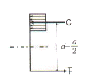
- 507mm
- 524mm
- 486mm
- 472mm
(정답률: 48%)
44. 다음 중 굴뚝과 같은 독립구조물의 기초 설계시 고려할 필요가 없는 하중은?
- 풍하중
- 지진하중
- 적설하중
- 고정하중
(정답률: 52%)
45. 그림과 같은 장방향 기둥에서 사용되는 띠철근의 최소 간격은? (단, 주철근=D19, 띠철근=D10)
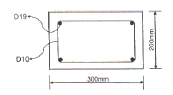
- 150mm
- 200mm
- 300mm
- 400mm
(정답률: 55%)
46. 상단과 하당이 고정인 길이 6m, 단면적 1cm2인 강봉의 상단으로부터 2m 지점에 45KN의 하향 축력이 작용할 때 하중 작용점의 변위는? (Es=200,000MPa)
- 3.0mm
- 3.5mm
- 4.0mm
- 4.5mm
(정답률: 32%)
47. 우리나라 지진지역 및 이에 따른 지역계수(A)값이 바르게 연결된 것은?
- 지진지역 1 - A=0.11, 지진지역 2- A=0.07
- 지진지역 1 - A=0.17, 지진지역 2- A=0.11
- 지진지역 1 - A=0.11, 지진지역 2- A=0.17
- 지진지역 1 - A=0.07, 지진지역 2- A=0.11
(정답률: 31%)
48. x축에 대한 단면2차모멘트 Ix=12000cm4일 때, X축에 대한 단면2차모멘트 Ix의 값은? (단, x축은 단면의 중심축 X축에 평행하다.)
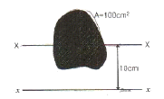
- 2000cm4
- 1000cm4
- 1250cm4
- 10000cm4
(정답률: 48%)
49. 연약지반의 기초구조에 대한 설명 중 틀린 것은?
- 기초 상호간을 지중보로 연결한다.
- 가능한 한 경질지반에 지지한다.
- 흙다지기, 강제배수 등의 방법으로 지반을 개량한다.
- 말뚝이 사용을 배제한다.
(정답률: 67%)
50. 그림에서 AC부재가 받는 힘은?
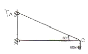
- 30kN
- 30√3kN
- 60√3kN
- 120kN
(정답률: 44%)
51. 강구조 용접부의 비파괴 검사법에 해당되지 않는 것은?
- 초음파 탐상검사
- 토크 검사
- 자분 탐상, 검사
- 방사선 투과 검사
(정답률: 63%)
52. 현장치기 콘크리트 중 수중에서 타설하는 콘크리트인 경우 철근의 최소 피복두께는 얼마인가?
- 40mm
- 60mm
- 80mm
- 100mm
(정답률: 57%)
53. 그림과 같은 단순보에서 반력 RA의 값은?
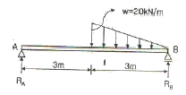
- 5kN
- 10kn
- 20kN
- 25kN
(정답률: 60%)
54. 플레이트 거더(plate girder)의 커버플레이트에 대한 설명 중 잘못된 것은?
- 커버플레이트의 길이는 보의 휨모멘트에 의하여 결정된다.
- 커버플레이트는 구조계산상 필요한 길이보다 여장을 갖도록 한다.
- 커버플레이트 수는 최대 5장 이하로 한다.
- 커버플레이트는 플랜지의 휨 내력의 부족을 보완하기 위하여 사용한다.
(정답률: 54%)
55. 다음 그림과 같이 용접을 할 때, 용접의 목두께(a)를구하는 식으로 옳은 것은?
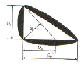
- a=1.41s1
- a=0.7s1
- a=0.7s2
- a=0.501s1
(정답률: 67%)
56. 강도설계법에서 원형 띠철근 기둥은 주근을 최소 몇 개 이상 배근해야 하는가?
- 4개
- 6개
- 8개
- 10개
(정답률: 38%)
57. 다음 그림과 같이 단순보에 등변분포하중이 작용하고 있을 때 보의 처짐곡선은 몇 차 곡선이 되는가?
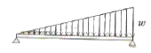
- 2차
- 3차
- 4차
- 5차
(정답률: 25%)
58. 그림과 같은 단순보의 최대 처짐이 중앙에서 3cm가 발생하였다. 보의 춤을 2배로 크게 하였을 경우 처짐량은?
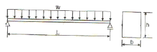
- 0.25cm
- 0.375cm
- 0.5cm
- 0.725cm
(정답률: 53%)
59. 재질관 단면적, 길이가 같은 장주에서 양단 힌지기둥의 좌굴하중과 양단 고정기둥의 좌굴하중과의 비는?
- 1 : 2
- 1 : 4
- 1 : 8
- 1: 16
(정답률: 51%)
60. 철골구조에서 기둥-보 접합부에서 관계없는 것은?
- 스플릿티(Split Tee)
- 메탈터치(Metal touch)
- 엔드플레이트(End plate)
- 다이아프람(Diaphram)
(정답률: 65%)
4과목: 건축설비
61. 변절실의 위치로 옳지 않은 것은?
- 부하의 중심에 가깝고 배전에 편리한 장소일 것
- 발전기실, 축전지실과 인접하지 않은 장소일 것
- 외부로부터 전원의 인입이 편리할 것
- 기기를 반입, 반출하는데 지장이 없을 것
(정답률: 80%)
62. 승객용 엘리베이터의 정원을 정할 때 적용하는 한 사람의 하중은?(오류 신고가 접수된 문제입니다. 반드시 정답과 해설을 확인하시기 바랍니다.)
- 55kg
- 65kg
- 75kg
- 85kg
(정답률: 65%)
63. 난방용 온수 배관의 동파방지 대책으로 옳지 않은 것은?
- 옥외 노출배관을 하지 않는다.
- 부동액을 혼입하여 사용한다.
- 에어벤트를 설치한다.
- 전열히터로 보온한다.
(정답률: 55%)
64. 가압급수방식(부스터방식)의 특징으로서 틀린 것은?
- 부하설계와 기기의 선정이 적절하지 못하면 에너지 낭비가 크다.
- 급수량에 따라 펌프의 대수제어 운전,회전수제어 운전이 가능하며 최상층의 수압도 크게 할 수 있다.
- 정전시에도 옥상탱크에 있는 물을 공급할 수 있어 안정적이다.
- 부스터펌프방식에 압력탱크를 병용하여 사용하면 펌프의 잦은 다락을 보완할 수 있다.
(정답률: 63%)
65. 내경이 20cm인 관내를 유속 1.2m/s의 물이 흐르고 있을때 유량은 얼마인가?
- 0.028 m3/s
- 0.038 m3/s
- 0.048 m3/s
- 0.⑤8 m3/s
(정답률: 51%)
66. 기구 배치에 의한 조명 방식 중 작업면상의 필요한 장소, 즉, 어떤 특별한 면을 부분조명하는 방식은?
- 전반 조명
- 국부 조명
- 직접 조명
- 간접 조명
(정답률: 71%)
67. 주철제 방열기에 대한 설명 중 틀린 것은?(오류 신고가 접수된 문제입니다. 반드시 정답과 해설을 확인하시기 바랍니다.)
- 부하 및 열손실이 가장 적은 곳에 설치한다.
- 벽면에서 50mm 정도 이격시켜 설치한다.
- 외벽측 창 아래 쪽에 설치한다.
- 주형, 세주형, 벽걸이형 등이 있다.
(정답률: 41%)
68. 2000명을 수용하는 극장에서 실온을 20℃로 유지하려면 환기량은 몇m3/hr인가?
- 11,110
- 21,222
- 30,444
- 35,644
(정답률: 35%)
69. 구조가 간단하고 자기 사이폰 작용을 일으키면 자정작용을 갖는 트랩으로 사이폰 작용을 일으키기 쉽기 때문에 사이폰 트랩이라고도 불리우는 것은?
- 드럼트랩
- 관트랩
- 기구트랩
- 바닥배수트랩
(정답률: 64%)
70. 다음과 같은 특징을 갖는 배선공사방식은?
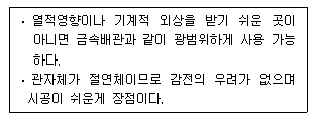
- 금속관 공사
- 버스덕트 공사
- 합성수지관 공사
- 애자사용 공사
(정답률: 67%)
71. 주위온도가 일정 온도이상으로 되면 동작하는 것으로 환기를 사용하는 곳에 주로 사용되는 화재 감지기는?
- 이온화식 감지기
- 차동식 스폿 감지기
- 정온식 스폿 감지기
- 광전식 스폿 감지기
(정답률: 77%)
72. 다음의 엘리베이터와 비교한 에스컬레이터의 특징을 설명한 내용 중 옳지 않은 것은?
- 단거리 대량수송에 적합하다.
- 기계실이 특별히 필요 없다.
- 대기시간이 거의 없이 연속적으로 승객을 수송할 수 있다.
- 피트가 복잡하며 건축물에 걸리는 하중이 최상층에 집중되므로 이에 대한 보강이 필요하다.
(정답률: 76%)
73. 가스설비에 대한 설명으로 옳지 않은 것은?
- 가스배관은 경사를 두어 관속에 있는 응축수의 유입을 방지한다.
- 가스미터는 전기 개폐기 ㆍ 전기미터에서 30cm 이상 떨어진 곳에 설치한다.
- 가스배관은 건물의 주요구조부를 관통하지 않도록 한다.
- 배관재료는 강관으로 나사접합이 주로 사용되지만 초고층 건물에서는 고압인 경우 강관을 용접이음하는 경우가 많다.
(정답률: 61%)
74. 통기관에 대한 설명 중 옳지 않은 것은?
- 사이폰 작용 및 배압에 의해서 트랩봉수가 파괴되는 것을 방지한다.
- 배수관 계통의 환기를 도모하여 관내를 청결하게 유지한다.
- 각개통방식은 기능적으로 가장 우수하고 이상적이다.
- 신정통방식은 회로통기방식이라고도 하며, 통기수직관을 설치한 배수 ㆍ 통기계통에 이용된다.
(정답률: 55%)
75. 어떤 엘리베이터의 승객 정원이 10명, 평균일주시간이 10초 일 때, 이 엘리베이터의 5분간 수송능력은?
- 80명
- 120명
- 240명
- 360명
(정답률: 36%)
76. 건축설비의 생애비용을 바탕으로 경제성을 평가하는 방법으로서 에너지절약 성능평가에 적합한 것은?
- 회수기간법
- 이니셜 코스트 법
- 내부 수익률법
- 라이프 사이클 코스트 법
(정답률: 73%)
77. 다음 중 장방향 덕트의 보강강법이 아닌 것은?
- 앵글 보강
- 다이아몬드 브레이크
- 홈형 보강
- 캔버스 이음
(정답률: 43%)
78. 다음의 스프링클러설비의 화재안전기준 내용 중 ( )안에 알맞은 것은?
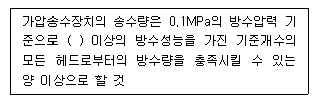
- 130ℓ/min
- 110ℓ/min
- 9ℓ/min
- 80ℓ/min
(정답률: 53%)
79. 다음은 어떤 수조면의 일사량을 나타낸 것이다. 그 값이 가장 큰 것은?
- 전일사량
- 확산일사량
- 천공일사량
- 반사일사량
(정답률: 60%)
80. 광원으로부터 일정거리 떨어진 수조면의 조도에 대한 설명 중 옳지 않은 것은?
- 광원의 광도에 비례한다.
- 거리의 제곱에 반비례한다.
- cosθ(입사각)에 비례한다.
- 측정점의 반사율에 반비례한다.
(정답률: 50%)
5과목: 건축법규
81. 중앙도시계획위원회에 대한 설명 중 옳지 않은 것은?
- 중앙도시계획위원회는 위원장ㆍ 부위원장 각 1인을 포함한 25인 이상 30인 이내의 위원으로 구성한다.
- 지방자치단체의 장이 입안한 광역도시계획 드을 검토하기 위해 도시계획상임기획단을 설치한다.
- 규정에 의한 용도지역 등의 변경계획에 관한 사항 등을 효율적으로 심의하기 위하여 분과위원회를 둘 수 있다.
- 회의는 재적위원 과반수의 출석으로 개이하고, 출석위원 과반수의 찬성으로 의결한다.
(정답률: 40%)
82. 대지 및 건축물관련 건축기준의 허용오차 범위에 대한 설명으로 옳지 않은 것은?
- 건축선의 후퇴거리는 3% 이내이다.
- 건축물의 벽체 두께는 3% 이내이다.
- 건축물의 높이는 1m를 초과할 수 없다.
- 건축물의 평면 길이는 0.5m를 초과할 수 없다.
(정답률: 30%)
83. 다음은 건축법령상 관계전문기술자와의 협력에 관한 기준 내용이다. ( )안에 알맞은 내용은?
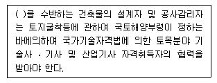
- 깊이 8m 이상의 토지굴착공사 또는 높이 3m 이상의 옹벽 등의 공사
- 깊이 8m 이상의 토지굴착공사 또는 높이 5m 이상의 옹벽 등의 공사
- 깊이 10m 이상의 토지굴착공사 또는 높이 3m 이상의 옹벽 등의 공사
- 깊이 10m 이상의 토지굴착공사 또는 높이 5m 이상의 옹벽 등의 공사
(정답률: 39%)
84. 다음 중 규정에 의해 부설주차장을 설치하지 아니할 수 있는 건축물은?
- 교회
- 수녀원
- 다가구주택
- 기도원
(정답률: 70%)
85. 다음 중 건축하거나 대수선하는 경우 지진에 대한 안전여부를 확인해야 하는 대상 건축물 기준으로 옳은 것은?(오류 신고가 접수된 문제입니다. 반드시 정답과 해설을 확인하시기 바랍니다.)
- 층수가 3층 이상인 건축물
- 연면적이 2천제곱미터 이상인 건축물
- 기둥과 기둥사이의 거리가 30m 이상인 건축물
- 높이가 13m 이상인 건축물
(정답률: 22%)
86. 대지면적 1,500m2이고 조경면적이 대지면적의 10%로 정해진 지역에 건축물을 신축할 때 옥상에 조경을 150m2시공할 경우 , 지표면의 조경면적은 최소 얼마 이상 하여야 하는가?
- 안해도 된다.
- 50m2
- 75m2
- 100m2
(정답률: 68%)
87. 주요구조부를 내화구조로 해야 하는 대상건축물 기준으로 옳지 않은 것은?
- 장례식장의 용도에 쓰이는 건축물로서 관람석 및 집회실의 바닥면적의 합계가 200제곱미터 이상인 것
- 문화 및 집회시설 중 전시장 용도에 쓰이는 건축물로서 그 용도에 쓰이는 바닥면적의 합계가 400제곱미터 이상인 것
- 공장의 용도에 쓰이는 건축물로서 그 용도에 사용하는 바닥면적의 합계가 2천제곱미터 이상인 것
- 건축물의 2층이 단독주택 중 다중주택의 용도에 쓰이는 건축물로서 그 용도에 쓰이는 바닥면적의 합계가 400제곱미터 이상인 것
(정답률: 52%)
88. 특별피난계단의 구조에 대한 설명 중 옳지 않은 것은?
- 계단실에는 노대 또는 부속실에 접하는 부분외에는 건축물의 내부와 접하는 창문등을 설치하지 않도록 한다.
- 계단은 내화구조로 하며, 피난층 또는 지상까지 직접 연결되도록 한다.
- 건축물의 내부에서 노대 또는 부속실로 통하는 출입구에는 을종방화문을 설치하도록 한다.
- 출입구의 유효너비는 0.9미터 이상으로 하고 피난의 방향으로 열 수 있도록 한다.
(정답률: 62%)
89. 노외주차장의 주차형식에 따른 차로의 최소 너비가 옳게 연결된 것은? (단, 출입구가 2개 이상인 경우)
- 평행주차 - 5.0m
- 60도 대향주차 - 5.0m
- 교차주차 - 3.5m
- 직각주차 - 5.5m
(정답률: 26%)
90. 주차장의 용도와 제1종 근린생활시설이 복합된 연면적 20,000m2인 건축물이 주차전용건축물로 인정받기 위해서는 주차장으로 사용되는 부분의 면적이 최소 얼마 이상이어야 하는가?
- 6,000m2
- 10,000m2
- 14,000m2
- 19,000m2
(정답률: 58%)
91. 국토의 계획 및 이용에 관한 법률에 정해진 용도지역안에서의 건폐율의 최대한도가 옳지 않은 것은?
- 주거지역:70% 이하
- 상업지역: 90% 이하
- 공업지역:70% 이하
- 녹지지역: 30% 이하
(정답률: 69%)
92. 다음의 권한의 위임 ㆍ 위탁에 관한 기준 내용 중 ( )안에 알맞은 것은?
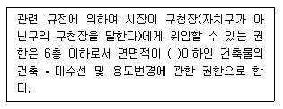
- 1,000m2
- 1,500m2
- 2,000m2
- 2,500m2
(정답률: 43%)
93. 주거용 바닥면적의 합계가 250m2가 되는 다가구 주택에 쓰이는 음용수용 급수관의 관경은 최소 얼마 이상으로 하여야 하는가?
- 20mm
- 25mm
- 32mm
- 40mm
(정답률: 41%)
94. 다음 중 도시관리계획 결정에 의한 공동구의 설치목적이 아닌 것은?
- 도시미관의 개선
- 도로구조의 보전
- 교통의 원활한 흐름
- 유수지의 충분한 확보
(정답률: 65%)
95. 에너지절약계획서의 제출 대상 건축물이 아닌 것은?(관련 규정 개정전 문제로 여기서는 기존 정답인 2번을 누르면 정답 처리됩니다. 자세한 내용은 해설을 참고하세요.)
- 업무시설 중 오피스텔로서 당해 용도에 사용되는 바닥면적의 합계가 3,000m2인 건축물
- 장례식장으로서 당해 용도에 사용되는 바닥면적의 합계가 2,000m2인 건축물
- 50세대인 디세대 주택
- 공동주택 중 기숙사로서 당해 용도에 사용되는 바닥면적의 합계가 2,000m2인 건축물
(정답률: 30%)
96. 허가 대상 건축물이라 하더라도 건축신고를 하면 건축허가를 받은 것으로 보는 경우에 속하지 않는 것은?
- 연면적의 합계가 100제곱미터 이하인 건축물의 건축
- 층수가 3층 이상인 건축물의 1개층 증축
- 연면적 200제곱미터 미만이고 3층 미만인 건축물의 대수선
- 바닥면적의 합계가 85제곱미터 이내의 증축
(정답률: 44%)
97. 오피스텔의 난방설비를 개별난방방식으로 하는 경우에 대한 기준 내용 중 옳지 않은 것은?
- 보일러의 연도는 내화구조로서 공동연료로 설치할 것
- 보일러는 거실 외의 곳에 설치할 것
- 보일러실의 윗부분에는 그 면적이 0.5m2이상인 환기창을 설치할 것
- 기름보일러를 설치하는 경우에는 기름저장소를 보일러실에 설치할 것
(정답률: 68%)
98. 다음 중 건축물에 설치하는 지하층의 구조에 대한 기준 내용으로 옳지 않은 것은?
- 거실의 바닥면적이 50제곱미터 이상인 층에는 직통계 단외에 피난층 또는 지상으로 통하는 비상탈출구 및 환기통을 설치할 것
- 바닥면적이 1천제곱미터 이상인 층에는 피난층 또는 지상으로 통하는 직통계단을 규정에 의해 방화구획을 구획되는 각 부분마다 1개소 이상 설치할 것
- 거실의 바닥면적의 합계가 500제곱미터 이상인 층에는 환기설비를 설치할 것
- 지하층의 바닥면적이 300제곱미터 이상인 층에는 식수공급을 위한 급수전을 1개소 이상 설치할 것
(정답률: 53%)
99. 기계식 주차장치의 안전기준에 관한 내용 중 옳지 않은 것은?(오류 신고가 접수된 문제입니다. 반드시 정답과 해설을 확인하시기 바랍니다.)
- 중형 기계식 주차장의 경우 기계식주차장치 출입구의 크기는 너비 2.3m 이상, 높이 1.6m 이상으로 하여야 한다.
- 대형 기계식 주차장의 경우 기계식주차장치 출입구의 크기는 너비 2.4m 이상, 높이 1.6m 이상으로 하여야한다.
- 중형 기계식 주차장의 경우 기계식주차장치 출입구의 크기는 너비 2.3m 이상, 높이 1.6m 이상, 길이 5.15m 이상으로 하여야 한다.
- 대형 기계식 주차장의 경우 기계식주차장치 출입구의 크기는 너비 2.4m 이상, 높이 1.6m , 길이 5.6m 이상으로 하여야 한다.
(정답률: 33%)
100. 다음 중 채광을 위하여 거실에 설치하는 창문등의 면적이 그 거실의 바닥면적의 1/10 미만이어도 가능한 것은? (단, 규정에 의한 조도 이상의 조명장치를 설치하지 않은 경우)
- 의료시설의 병실
- 숙박시설의 로비
- 학교의 교실
- 단독주택의 거실
(정답률: 60%)